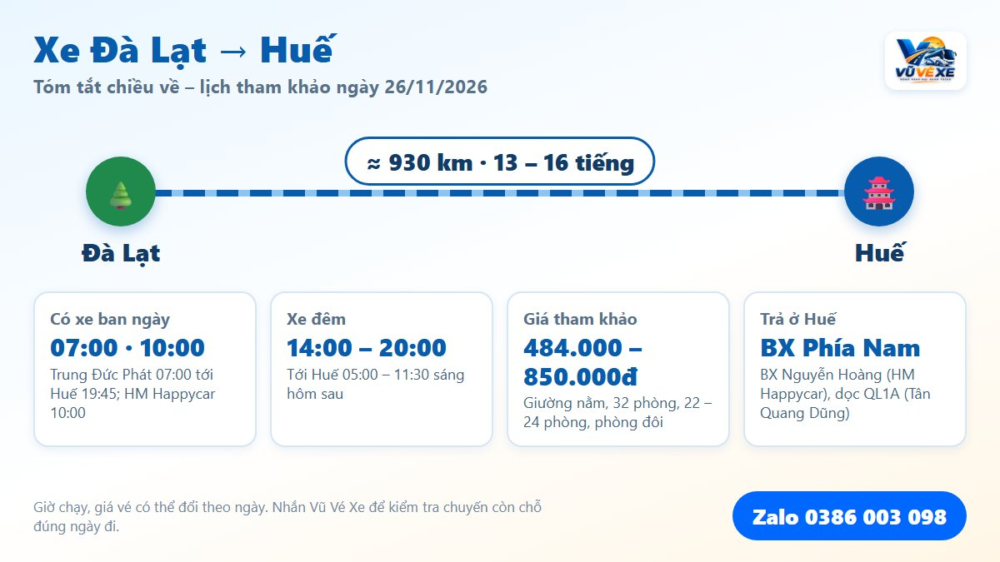

Trả lời nhanh: từ Đà Lạt về Huế khoảng 930 km, mất 13 – 16 tiếng. Lịch ngày 26/11/2026 có 20 chuyến của 6 nhà xe: Trung Đức Phát, HM Happycar, Quốc Bảo, Tân Quang Dũng, Phương Trang và Quang Dũng VIP. Khác chiều đi, chiều này có xe ban ngày: Trung Đức Phát 07:00 (tới Huế 19:45 cùng ngày) và HM Happycar 10:00; còn lại là chuyến đêm rời Đà Lạt 14:00 – 20:00, về Huế từ 05:00 sáng. Giá phổ biến 484.000 – 850.000đ. Chiều ngược xem bài xe Huế đi Đà Lạt.

Mục lục
- Bảng tóm tắt xe Đà Lạt về Huế
- Thông tin từng nhà xe
- Đà Lạt về Huế bao nhiêu km, mấy tiếng?
- Đi xe ban ngày hay xe đêm?
- Chọn chuyến theo giờ muốn về tới Huế
- Lên xe ở đâu tại Đà Lạt?
- Về tới Huế xuống ở đâu?
- Phòng đôi, 22 phòng, 32 phòng hay giường nằm?
- Lưu ý cho chặng Đà Lạt về Huế
- Câu hỏi thường gặp
Bảng tóm tắt: xe Đà Lạt về Huế (lịch ngày 26/11/2026)
| Nhà xe | Loại xe | Giờ đón | Điểm đón ở Đà Lạt | Giờ tới | Điểm trả ở Huế | Giá tham khảo | WC |
|---|---|---|---|---|---|---|---|
| Trung Đức Phát | Limousine 32 phòng | 07:00 | Bến xe liên tỉnh Đà Lạt | 19:45 cùng ngày | Bến xe Phía Nam Huế | 495.000đ (giá gốc 550.000đ) | Có |
| HM Happycar | Limousine 24 phòng / cabin 22 phòng | 10:00 · 19:00 · 20:00 | VP 299 Nguyên Tử Lực | 01:30 (chuyến sáng) · 10:30 · 11:30 | Bến xe Nguyễn Hoàng | từ 850.000đ | Hỏi khi đặt |
| Quốc Bảo | Giường nằm 34 phòng VIP | 14:00 · 17:01 | Đà Lạt (hỏi điểm cụ thể) | 05:00 · 08:01 | Bến xe Phía Nam Huế | Hỏi khi đặt | Hỏi khi đặt |
| Tân Quang Dũng | Limousine 22 phòng đôi | 14:30 · 14:31 · 15:30 · 15:31 · 16:00 | Văn phòng nhà xe ở Đà Lạt | 05:00 – 06:30 | Bến xe Phía Nam Huế / Huế dọc Quốc lộ 1A | 484.000đ (phòng đôi G) / từ 616.000đ | Có |
| Phương Trang | Limousine giường nằm 34 chỗ | 16:00 | Bến xe Đà Lạt | 06:00 | Bến xe Phía Nam Huế | 530.000đ | Hỏi khi đặt |
| Quang Dũng VIP Limousine | Limousine 22 phòng | 16:30 · 18:30 | VP 263 Mai Anh Đào | 06:30 · 08:30 | Bến xe Phía Nam Huế | từ 700.000đ | Có |
Lịch tham khảo cho ngày 26/11/2026, Vũ Vé Xe tra trên ứng dụng đặt vé ngày 19/11/2026. Giờ, giá có thể đổi theo ngày, cuối tuần và dịp Tết. Một số chuyến chạy tiếp ra Quảng Trị, Quảng Bình, nên giờ tới Huế có thể sớm hoặc muộn vài chục phút.
Thông tin từng nhà xe Đà Lạt – Huế
Các mục dưới đây xếp theo giờ rời Đà Lạt sớm tới muộn ngày tra, không phải thứ hạng chất lượng.
Trung Đức Phát – limousine 32 phòng (WC)
Nhà xe duy nhất có chuyến sáng sớm: rời Bến xe liên tỉnh Đà Lạt lúc 07:00, tới Bến xe Phía Nam Huế khoảng 19:45 cùng ngày, mất chừng 12 tiếng 45 – nhanh nhất tuyến vì đường ban ngày ít phải dừng đón trả. Giá 495.000đ (giá gốc 550.000đ).
Hợp người không quen ngủ trên xe, người lớn tuổi muốn về tới nhà trước giờ ngủ, hoặc ai muốn ngắm đèo và biển miền Trung lúc trời sáng. Xe có nhà vệ sinh. Ngày tra, Trung Đức Phát không có chuyến chiều Huế đi Đà Lạt, nên nếu muốn đi cả hai chiều cùng nhà xe thì hỏi trước.
Đặt vé Trung Đức Phát: Zalo đặt vé · 0386 003 098 · 0963 307 942
HM Happycar – limousine 24 phòng / cabin 22 phòng
Ba chuyến từ văn phòng 299 Nguyên Tử Lực: 10:00 (tới Huế khoảng 01:30 rạng sáng), 19:00 (10:30) và 20:00 (11:30 trưa hôm sau). Xe trả ở Bến xe Nguyễn Hoàng rồi chạy tiếp ra Phong Nha. Giá từ 850.000đ, cao nhất tuyến.
Chuyến 10:00 hợp người muốn tranh thủ buổi sáng cuối ở Đà Lạt mà vẫn về trong ngày, nhưng tới Huế lúc nửa đêm, nên hẹn người nhà ra đón – xem xe khách tới nơi lúc nửa đêm. Hai chuyến tối là chuyến rời Đà Lạt muộn nhất, hợp người chơi trọn ngày cuối rồi mới lên xe.
Đặt vé HM Happycar: Zalo đặt vé · 0386 003 098 · 0963 307 942
Quốc Bảo – giường nằm 34 phòng VIP
Hai chuyến rời Đà Lạt lúc 14:00 và 17:01, tới Bến xe Phía Nam Huế khoảng 05:00 và 08:01, mất chừng 15 tiếng. Lịch chưa niêm yết giá và điểm đón cụ thể ở Đà Lạt, chỉ nhận đặt qua điện thoại. Khi giữ chỗ nên hỏi rõ chỗ lên xe, có xe trung chuyển từ khách sạn không và giá của ngày đi.
Đặt vé Quốc Bảo: Zalo đặt vé · 0386 003 098 · 0963 307 942
Tân Quang Dũng – limousine 22 phòng đôi (WC)
Nhiều giờ chạy nhất tuyến: 14:30, 14:31, 15:30, 15:31 và 16:00 từ văn phòng nhà xe ở Đà Lạt, tới Huế khoảng 05:00 – 06:30. Xe trả ở Bến xe Phía Nam Huế hoặc dọc Quốc lộ 1A rồi chạy tiếp ra Quảng Trị, nên khách Đông Hà cũng đi được – xem xe Đà Lạt đi Quảng Trị.
Giá rẻ nhất chiều này: phòng đôi loại "G" 484.000đ (đặt qua điện thoại), phòng đôi thường từ 616.000đ. Phòng đôi hợp hai người đi cùng; đi một mình nên hỏi có ghép phòng hay phải mua cả phòng.
Đặt vé Tân Quang Dũng: Zalo đặt vé · 0386 003 098 · 0963 307 942
Phương Trang – limousine giường nằm 34 chỗ
Chuyến 16:00 ở Bến xe Đà Lạt, chạy thẳng tới Bến xe Phía Nam Huế khoảng 06:00 (14 tiếng). Giá 530.000đ. Bến xe Đà Lạt ở gần trung tâm, dễ đi taxi tới; chuyến chạy thẳng nên giờ đón ít bị lệch.
Đặt vé Phương Trang: Zalo đặt vé · 0386 003 098 · 0963 307 942
Quang Dũng VIP Limousine – limousine 22 phòng (WC)
Hai chuyến 16:30 và 18:30 từ văn phòng 263 Mai Anh Đào, tới Bến xe Phía Nam Huế khoảng 06:30 và 08:30. Giá từ 700.000đ. Mỗi khách một phòng riêng có rèm, xe có nhà vệ sinh; chuyến 18:30 cho thêm thời gian ăn tối ở Đà Lạt trước khi lên xe.
Đặt vé Quang Dũng VIP: Zalo đặt vé · 0386 003 098 · 0963 307 942
Nhà xe khác khách hay hỏi
Điền Linh có chuyến chiều Huế đi Đà Lạt nhưng ngày tra không thấy chuyến chiều về. Trên mạng còn hay nhắc Minh Đức, An Phú Travel, Quốc Khánh; ngày 26/11/2026 Vũ Vé Xe chưa thấy các nhà xe này trong lịch đặt vé chiều Đà Lạt về Huế. Muốn đi đúng nhà xe quen, nhắn Zalo để Vũ Vé Xe hỏi lại lịch của ngày bạn về.
Đà Lạt về Huế bao nhiêu km, mấy tiếng?
- Quãng đường: khoảng 930 km theo đường bộ.
- Thời gian xe khách: 13 – 16 tiếng. Chuyến ban ngày Trung Đức Phát khoảng 12 tiếng 45; chuyến đêm 14 – 15 tiếng 30.
- Lộ trình: xe đổ đèo xuống khỏi cao nguyên ở đầu hành trình, ra Quốc lộ 1A và cao tốc Bắc – Nam rồi chạy dọc duyên hải miền Trung ra Huế; tuyến cụ thể và điểm dừng nghỉ tùy nhà xe.
Đi xe ban ngày hay xe đêm?
- Xe ngày (07:00, 10:00): không mất một đêm ngủ trên xe, ngắm được cảnh. Đổi lại mất trọn một ngày, và chuyến 10:00 tới Huế lúc nửa đêm.
- Xe đêm (14:00 – 20:00): tiết kiệm thời gian, sáng hôm sau đã ở Huế; còn chơi được buổi sáng ở Đà Lạt. Hợp người đã quen ngủ trên xe giường nằm – xem mẹo ngủ ngon trên xe giường nằm.
Chọn chuyến theo giờ muốn về tới Huế
- Về trong buổi tối cùng ngày: Trung Đức Phát 07:00 (tới 19:45).
- Về rạng sáng 05:00 – 06:30, kịp đi làm: Quốc Bảo 14:00 (05:00), Tân Quang Dũng 14:30 – 16:00 (05:00 – 06:30), Phương Trang 16:00 (06:00), Quang Dũng VIP 16:30 (06:30).
- Về 08:00 – 08:30, không phải dậy quá sớm: Quốc Bảo 17:01 (08:01), Quang Dũng VIP 18:30 (08:30).
- Về gần trưa: HM Happycar 19:00 – 20:00 (10:30 – 11:30), hợp người muốn chơi trọn ngày cuối ở Đà Lạt.
Mang theo đồ ăn nhẹ và nước cho chặng dài – xem đi xe khách đường dài: ăn uống, dừng nghỉ.
Lên xe ở đâu tại Đà Lạt?
- Bến xe liên tỉnh Đà Lạt: Trung Đức Phát.
- Bến xe Đà Lạt: Phương Trang.
- Văn phòng 263 Mai Anh Đào: Quang Dũng VIP.
- Văn phòng 299 Nguyên Tử Lực: HM Happycar.
- Văn phòng nhà xe ở Đà Lạt: Tân Quang Dũng; Quốc Bảo – hỏi địa chỉ và có xe trung chuyển không khi giữ chỗ.
Nên có mặt trước giờ chạy 20 – 30 phút. Đà Lạt chiều tối hay mưa và kẹt xe ở khu trung tâm cuối tuần, gọi taxi sớm hơn thường lệ. Vị trí các bến, văn phòng xem thêm ở xe khách vào Đà Lạt xuống ở đâu.
Về tới Huế xuống ở đâu?
- Bến xe Phía Nam Huế: Trung Đức Phát, Quốc Bảo, Tân Quang Dũng, Phương Trang, Quang Dũng VIP.
- Bến xe Nguyễn Hoàng: HM Happycar.
- Dọc Quốc lộ 1A ở Huế: Tân Quang Dũng – báo nhà xe điểm xuống khi lên xe.
Từ bến về trung tâm, ra sân bay hay đi tiếp, xem xe khách vào Huế xuống ở đâu. Bài ghi tên phường, xã ở Huế theo cách gọi quen thuộc trước khi sáp nhập; khi đặt vé, Vũ Vé Xe sẽ tư vấn kỹ điểm xuống theo địa chỉ hiện tại của bạn.
Phòng đôi, 22 phòng, 32 phòng hay giường nằm?
Giường nằm 34 chỗ (Phương Trang) giá mềm, giường xếp ba dãy hai tầng. Giường nằm 34 phòng VIP (Quốc Bảo) có vách ngăn từng chỗ. Limousine 32 phòng (Trung Đức Phát) là phòng đơn xếp dày hơn loại 22 phòng, hợp chuyến ngày. Limousine 22 – 24 phòng (Quang Dũng VIP, HM Happycar) mỗi khách một khoang rộng, hợp đi một mình. Phòng đôi của Tân Quang Dũng dành cho hai người.
So sánh kỹ hơn ở mẹo chọn phòng đơn, phòng đôi trên xe giường phòng. Chặng 13 – 16 tiếng nên ưu tiên xe có nhà vệ sinh – xem mẹo hỏi xe có nhà vệ sinh không.
Lưu ý cho chặng Đà Lạt về Huế
- Đổ đèo ngay đầu chuyến: xe xuống khỏi cao nguyên trong 1 – 2 giờ đầu, người hay say nên uống thuốc trước khi lên xe 30 phút, chọn giường tầng dưới – xem mẹo đi xe khách không say xe.
- Lạnh lúc lên xe, nóng khi xuống: Đà Lạt chiều tối se lạnh, nhưng miền Trung ban ngày nóng. Mặc nhiều lớp mỏng để dễ cởi – xem mẹo mặc ấm khi đi xe điều hòa lạnh.
- Đặc sản mang về: rau, dâu, mứt, hoa nên đóng thùng chắc, báo nhà xe trước nếu hành lý cồng kềnh.
- Mưa ở miền Trung: từ tháng 10 tới tháng 12, đoạn Quảng Nam – Huế hay mưa lớn, xe có thể tới trễ – xem đi xe khách mùa mưa bão miền Trung.
- Về Tết: chiều Đà Lạt về Huế là chiều hết vé sớm nhất dịp Tết, đặt trước khi nhà xe mở bán – xem mẹo đặt vé chiều đi và chiều về.
Chiều ngược: xe Huế đi Đà Lạt
Chiều Huế lên Đà Lạt chỉ có chuyến đêm (14:00 – 20:30) và có thêm nhà xe Điền Linh. Bảng giờ, giá, điểm đón ở Huế có trong bài xe Huế đi Đà Lạt: giờ chạy, giá vé.
Tuyến cùng cụm
Xe Huế đi Đà Lạt · xe Đà Lạt đi Quảng Trị · xe Đà Nẵng – Đà Lạt · xe Đà Lạt đi Sài Gòn · du lịch Đà Lạt bằng xe khách.
Đặt vé Đà Lạt về Huế qua Zalo
Gửi một tin gồm ngày về, số khách, chỗ ở tại Đà Lạt và điểm muốn xuống ở Huế. Vũ Vé Xe hỏi chỗ trên các chuyến phù hợp, báo lại giá và giờ đón; việc thanh toán, nhận vé làm theo hướng dẫn của nhà xe đã chọn.
💬 Nhắn Zalo đặt vé 📞 0386 003 098 📞 0963 307 942
Trang tuyến: Đà Lạt – Huế.
Câu hỏi thường gặp
Xe Đà Lạt về Huế bao nhiêu km, mất bao lâu?
Quãng đường khoảng 930 km. Theo lịch ngày 26/11/2026: Trung Đức Phát khoảng 12 tiếng 45 (chuyến ngày 07:00 – 19:45), Phương Trang 14 tiếng, Tân Quang Dũng 14 tiếng 30, Quốc Bảo 15 tiếng, HM Happycar 15 tiếng 30, Quang Dũng VIP 14 tiếng.
Vé xe Đà Lạt về Huế giá bao nhiêu?
Tham khảo ngày 26/11/2026: Tân Quang Dũng 484.000đ (phòng đôi loại G) hoặc từ 616.000đ, Trung Đức Phát 495.000đ, Phương Trang 530.000đ, Quang Dũng VIP từ 700.000đ, HM Happycar từ 850.000đ. Quốc Bảo chưa niêm yết giá, cần hỏi trước. Giá có thể đổi theo ngày.
Có xe Đà Lạt về Huế chạy ban ngày không?
Có. Trung Đức Phát rời Bến xe liên tỉnh Đà Lạt lúc 07:00, tới Bến xe Phía Nam Huế khoảng 19:45 cùng ngày, giá 495.000đ. HM Happycar có chuyến 10:00 từ văn phòng 299 Nguyên Tử Lực, tới Bến xe Nguyễn Hoàng khoảng 01:30 rạng sáng hôm sau.
Xe Đà Lạt về Huế đón ở đâu?
Theo lịch: Bến xe liên tỉnh Đà Lạt (Trung Đức Phát), Bến xe Đà Lạt (Phương Trang), văn phòng 263 Mai Anh Đào (Quang Dũng VIP), văn phòng 299 Nguyên Tử Lực (HM Happycar), văn phòng nhà xe ở Đà Lạt (Tân Quang Dũng). Quốc Bảo đón ở Đà Lạt, nên hỏi điểm cụ thể khi giữ chỗ.
Xe Đà Lạt về Huế trả khách ở đâu?
Phần lớn trả ở Bến xe Phía Nam Huế (Trung Đức Phát, Quốc Bảo, Tân Quang Dũng, Phương Trang, Quang Dũng VIP). HM Happycar trả ở Bến xe Nguyễn Hoàng. Tân Quang Dũng có thể trả dọc Quốc lộ 1A ở Huế rồi đi tiếp ra Quảng Trị.
Xe Quốc Bảo Đà Lạt về Huế có chạy không?
Có. Lịch ngày 26/11/2026 ghi Quốc Bảo chạy giường nằm 34 phòng VIP, rời Đà Lạt lúc 14:00 và 17:01, tới Bến xe Phía Nam Huế khoảng 05:00 và 08:01. Nhà xe chưa niêm yết giá, nhắn Zalo 0386 003 098 để Vũ Vé Xe hỏi giá và chỗ trống.
Vé xe Đà Lạt về Huế dịp Tết có tăng không?
Thường tăng và hết chỗ sớm nhất trong năm, vì sinh viên và người Huế làm việc ở Đà Lạt cùng về quê ăn Tết. Nên báo ngày về qua Zalo 0386 003 098 sớm để Vũ Vé Xe hỏi khi nhà xe mở bán.
Hỏi chuyến Đà Lạt về Huế
Về Huế thăm nhà, về quê ăn Tết hay kết thúc chuyến du lịch, cứ nhắn 0386 003 098 hoặc gọi 0963 307 942. Lịch và giá trong bài để anh/chị hình dung trước; giờ đón, điểm trả và giá cuối cùng do nhà xe chốt khi giữ chỗ.